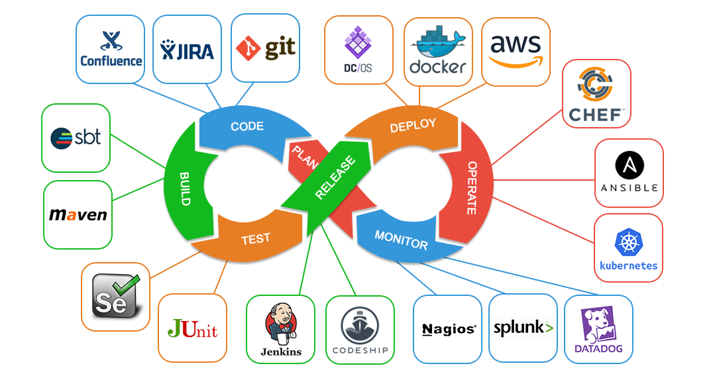

Homepage
Change
INFRASTRUCTURE AS A SERVICE
DEVOPS
Acronym
What is?
Is DevOps a culture? No, DevOps is not a culture per se, but it does require a strong cultural
and organizational change for its implementation. A cultural shift toward collaboration,
communication, and ultimately full integration between the old
(usually rabidly stagnant) areas of development and systems.
This culture
change is so difficult to achieve in some organizations that many people directly
identify it with DevOps, but let's remember: DevOps is a software development methodology,
and a culture change is not in itself a way of developing software.
